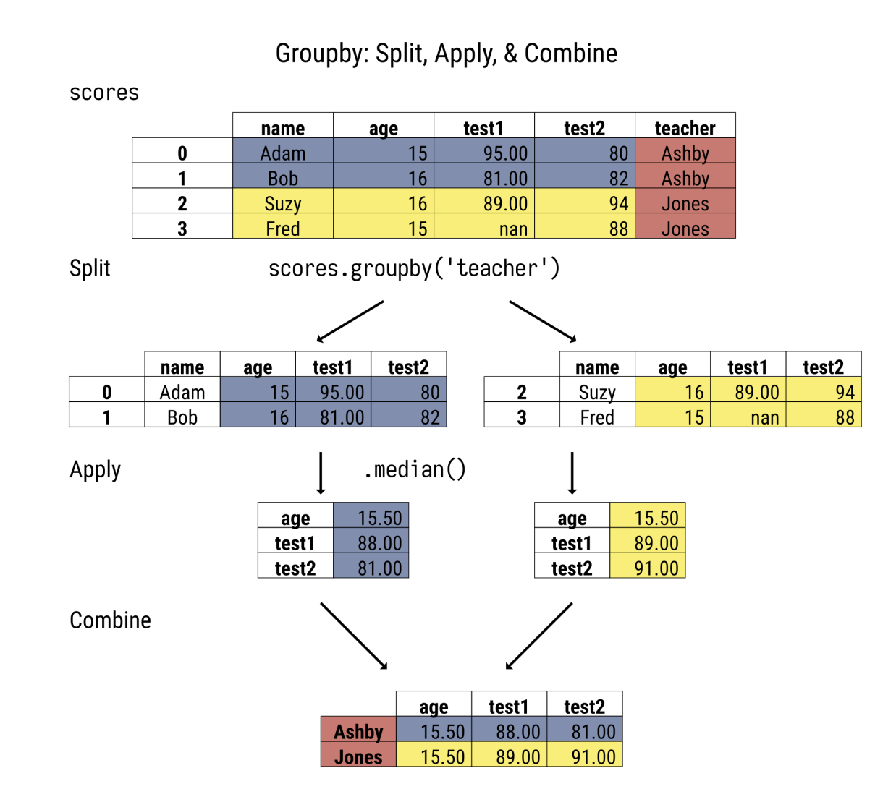

import pandas as pd
import numpy as npPivot Table and Grouping in Pandas
Create a dataset
### Create a dataset
import pandas as pd
import numpy as np
# create categorical variables
age_group = pd.Categorical(["18-24", "25-34", "35-44", "45-54", "55-64", "65+", "18-24", "25-34", "35-44", "45-54", "55-64", "65+", "18-24", "25-34", "35-44"])
marital_status = pd.Categorical(["Married", "Single", "Married", "Single", "Widowed", "Divorced", "Married", "Single", "Married", "Single", "Widowed", "Divorced", "Married", "Single", "Married"])
employment_status = pd.Categorical(["Employed", "Unemployed", "Employed", "Unemployed", "Retired", "Employed", "Unemployed", "Employed", "Unemployed", "Employed", "Retired", "Unemployed", "Employed", "Unemployed", "Retired"])
gender = pd.Categorical(["Male", "Female", "Male", "Female", "Male", "Female", "Male", "Female", "Male", "Female", "Male", "Female", "Male", "Female", "Male"])
# create numeric variables
income = np.random.normal(50000, 10000, 15)
education_years = np.random.randint(8, 16, 15)
number_of_children = np.random.randint(0, 5, 15)
hours_worked_per_week = np.random.randint(20, 60, 15)
# create census dataset
census_data = pd.DataFrame({"age_group": age_group, "marital_status": marital_status, "employment_status": employment_status, "gender": gender, "income": income, "education_years": education_years, "number_of_children": number_of_children, "hours_worked_per_week": hours_worked_per_week})
census_data.head(3)| age_group | marital_status | employment_status | gender | income | education_years | number_of_children | hours_worked_per_week | |
|---|---|---|---|---|---|---|---|---|
| 0 | 18-24 | Married | Employed | Male | 54327.605016 | 12 | 2 | 45 |
| 1 | 25-34 | Single | Unemployed | Female | 51258.164750 | 14 | 3 | 38 |
| 2 | 35-44 | Married | Employed | Male | 52939.298442 | 9 | 2 | 42 |
Pivot Table
# what is the average education years for each age_group and employment_status?(census_data
.pivot_table(index='age_group', columns='employment_status',
values='education_years', aggfunc='mean')
)| employment_status | Employed | Retired | Unemployed |
|---|---|---|---|
| age_group | |||
| 18-24 | 10.5 | NaN | 12.0 |
| 25-34 | 8.0 | NaN | 14.5 |
| 35-44 | 9.0 | 9.0 | 11.0 |
| 45-54 | 8.0 | NaN | 15.0 |
| 55-64 | NaN | 14.5 | NaN |
| 65+ | 11.0 | NaN | 15.0 |
# Using Max as aggregate function
(census_data
.pivot_table(index='age_group', columns='employment_status',
values='education_years', aggfunc='max')
)| employment_status | Employed | Retired | Unemployed |
|---|---|---|---|
| age_group | |||
| 18-24 | 12.0 | NaN | 12.0 |
| 25-34 | 8.0 | NaN | 15.0 |
| 35-44 | 9.0 | 9.0 | 11.0 |
| 45-54 | 8.0 | NaN | 15.0 |
| 55-64 | NaN | 15.0 | NaN |
| 65+ | 11.0 | NaN | 15.0 |
Using multiple aggregations
# Find the Min and Max Incomes for all the age groups
(census_data.
pivot_table(index='age_group',
values='income', aggfunc=['min', 'max'])
)| min | max | |
|---|---|---|
| income | income | |
| age_group | ||
| 18-24 | 53176.552487 | 65210.548202 |
| 25-34 | 32718.963301 | 63933.909067 |
| 35-44 | 52939.298442 | 66377.414798 |
| 45-54 | 38553.347657 | 61113.975298 |
| 55-64 | 46070.260269 | 51285.443271 |
| 65+ | 42717.383692 | 51510.970139 |
(census_data.
pivot_table(index='age_group',
values=['income','education_years'], aggfunc=['min', 'max'])
)| min | max | |||
|---|---|---|---|---|
| education_years | income | education_years | income | |
| age_group | ||||
| 18-24 | 9 | 53176.552487 | 12 | 65210.548202 |
| 25-34 | 8 | 32718.963301 | 15 | 63933.909067 |
| 35-44 | 9 | 52939.298442 | 11 | 66377.414798 |
| 45-54 | 8 | 38553.347657 | 15 | 61113.975298 |
| 55-64 | 14 | 46070.260269 | 15 | 51285.443271 |
| 65+ | 11 | 42717.383692 | 15 | 51510.970139 |
Using custom aggregate function in pivot_table
# We can provide a custom aggfunc function to the pivot_table
# Let us calculate the percentage of people employment for a given age_group
def percentage_of_employment_status(ser):
return ser.str.contains('Employed').sum() / len(ser) * 100
# We are not provide 'columns' here because we need a single column output
# The custom aggregate function will be applied on the values 'employment_status'
(census_data
.pivot_table(index='age_group',
values='employment_status', aggfunc=percentage_of_employment_status)
)| employment_status | |
|---|---|
| age_group | |
| 18-24 | 66.666667 |
| 25-34 | 33.333333 |
| 35-44 | 33.333333 |
| 45-54 | 50.000000 |
| 55-64 | 0.000000 |
| 65+ | 50.000000 |
Different Aggregations per column
# For each gender what is the average Income and max hours_worked_per_week
(census_data.
pivot_table(index='gender',
aggfunc={'income': 'mean', 'hours_worked_per_week': 'min'})
)| hours_worked_per_week | income | |
|---|---|---|
| gender | ||
| Female | 29 | 48829.530558 |
| Male | 26 | 55967.094844 |
Groupby

groupbymethod is lazy and does not perform an aggregation until we specify which aggregation to perform
# This will create a multi-Index series
# The columns in groupby will become the index of the series or dataframe
# we need to unstack the index to get the pivot table
census_data.groupby(['age_group','employment_status'])['education_years'].mean()age_group employment_status
18-24 Employed 10.5
Retired NaN
Unemployed 12.0
25-34 Employed 8.0
Retired NaN
Unemployed 14.5
35-44 Employed 9.0
Retired 9.0
Unemployed 11.0
45-54 Employed 8.0
Retired NaN
Unemployed 15.0
55-64 Employed NaN
Retired 14.5
Unemployed NaN
65+ Employed 11.0
Retired NaN
Unemployed 15.0
Name: education_years, dtype: float64# The below code will unstack the multi-Index and create a pivot table
# The column names are still multi-Index
# We can rename the column names for convineance
census_data.groupby(['age_group','employment_status'])['education_years'].mean().unstack('employment_status')| employment_status | Employed | Retired | Unemployed |
|---|---|---|---|
| age_group | |||
| 18-24 | 10.5 | NaN | 12.0 |
| 25-34 | 8.0 | NaN | 14.5 |
| 35-44 | 9.0 | 9.0 | 11.0 |
| 45-54 | 8.0 | NaN | 15.0 |
| 55-64 | NaN | 14.5 | NaN |
| 65+ | 11.0 | NaN | 15.0 |
# better coding format
(census_data
.groupby(['age_group','employment_status'])
.education_years
.mean()
.unstack('employment_status')
)| employment_status | Employed | Retired | Unemployed |
|---|---|---|---|
| age_group | |||
| 18-24 | 10.5 | NaN | 12.0 |
| 25-34 | 8.0 | NaN | 14.5 |
| 35-44 | 9.0 | 9.0 | 11.0 |
| 45-54 | 8.0 | NaN | 15.0 |
| 55-64 | NaN | 14.5 | NaN |
| 65+ | 11.0 | NaN | 15.0 |
Groupby using custom Aggregate function
(census_data # dataframe on which to perform groupby
.groupby(['age_group']) # columns to group by
## Pull out the required column on which to perform aggregation
[['employment_status']] # column on which to perform aggregation operation. As we are using '[[' here, the output will be a dataframe. If using '[', the output will be series
.agg(percentage_of_employment_status) # using custom aggregate function
)| employment_status | |
|---|---|
| age_group | |
| 18-24 | 66.666667 |
| 25-34 | 33.333333 |
| 35-44 | 33.333333 |
| 45-54 | 50.000000 |
| 55-64 | 0.000000 |
| 65+ | 50.000000 |
groupby aggregation on multiple columns
# Find the Min and Max Incomes for all the age groups
(census_data.
groupby(['age_group'])
[['income', 'education_years']]
.agg(['min', 'max'])
)| income | education_years | |||
|---|---|---|---|---|
| min | max | min | max | |
| age_group | ||||
| 18-24 | 53176.552487 | 65210.548202 | 9 | 12 |
| 25-34 | 32718.963301 | 63933.909067 | 8 | 15 |
| 35-44 | 52939.298442 | 66377.414798 | 9 | 11 |
| 45-54 | 38553.347657 | 61113.975298 | 8 | 15 |
| 55-64 | 46070.260269 | 51285.443271 | 14 | 15 |
| 65+ | 42717.383692 | 51510.970139 | 11 | 15 |
Different aggregations per column
# For each gender what is the average Income and max hours_worked_per_week
(census_data
.groupby('gender')
.agg({'income': ['min','max','mean'], 'hours_worked_per_week': 'min'})
)| income | hours_worked_per_week | |||
|---|---|---|---|---|
| min | max | mean | min | |
| gender | ||||
| Female | 32718.963301 | 63933.909067 | 48829.530558 | 29 |
| Male | 46070.260269 | 66377.414798 | 55967.094844 | 26 |
Named Aggregations
- We can use this functionality to name the columns when using groupby
- We can use keyword parameter in
aggfunction, which will turn into a column name - The input for keyword parameter will be a tuple - (column_name, agg_function)
- Use Named Aggregations for flat column names
- When performing groupby with multiple categorical columns, pandas will create the cartesian product of those columns even if there is no corresponding value.
- This is not available for pivot_table
(census_data
.groupby('gender')
.agg(min_income=('income','min'),
max_income=('income','max'),
mean_income=('income','mean'),
min_hours_worked_per_week=('hours_worked_per_week','min'),
max_hours_worked_per_week=('hours_worked_per_week','max')
)
)| min_income | max_income | mean_income | min_hours_worked_per_week | max_hours_worked_per_week | |
|---|---|---|---|---|---|
| gender | |||||
| Female | 32718.963301 | 63933.909067 | 48829.530558 | 29 | 54 |
| Male | 46070.260269 | 66377.414798 | 55967.094844 | 26 | 59 |
Grouping with Functions
def even_grouper(idx):
return 'odd' if idx % 2 else 'even'census_data.pivot_table(index=even_grouper, aggfunc='size')even 8
odd 7
dtype: int64(census_data
.groupby(even_grouper)
.size()
)even 8
odd 7
dtype: int64Stacking and Unstacking
- Unstack moves an index into the columns
- We use this on multi-index data, moving one of the indices into the columns
- stack method does the reverse, moving multi-level column into the index
(census_data
.groupby(['age_group','employment_status'])
.size()
)age_group employment_status
18-24 Employed 2
Retired 0
Unemployed 1
25-34 Employed 1
Retired 0
Unemployed 2
35-44 Employed 1
Retired 1
Unemployed 1
45-54 Employed 1
Retired 0
Unemployed 1
55-64 Employed 0
Retired 2
Unemployed 0
65+ Employed 1
Retired 0
Unemployed 1
dtype: int64# Unstacking a series into a dataframe
(census_data
.groupby(['age_group','employment_status'])
.size()
.unstack('employment_status'))| employment_status | Employed | Retired | Unemployed |
|---|---|---|---|
| age_group | |||
| 18-24 | 2 | 0 | 1 |
| 25-34 | 1 | 0 | 2 |
| 35-44 | 1 | 1 | 1 |
| 45-54 | 1 | 0 | 1 |
| 55-64 | 0 | 2 | 0 |
| 65+ | 1 | 0 | 1 |
# Unstacking a index of a dataframe into nested columns
(census_data
.groupby(['age_group','employment_status'])
.mean(numeric_only=True)
.unstack('employment_status'))| income | education_years | number_of_children | hours_worked_per_week | |||||||||
|---|---|---|---|---|---|---|---|---|---|---|---|---|
| employment_status | Employed | Retired | Unemployed | Employed | Retired | Unemployed | Employed | Retired | Unemployed | Employed | Retired | Unemployed |
| age_group | ||||||||||||
| 18-24 | 53752.078752 | NaN | 65210.548202 | 10.5 | NaN | 12.0 | 1.0 | NaN | 4.0 | 35.5 | NaN | 36.0 |
| 25-34 | 63933.909067 | NaN | 41988.564026 | 8.0 | NaN | 14.5 | 4.0 | NaN | 1.5 | 33.0 | NaN | 46.0 |
| 35-44 | 52939.298442 | 58349.636265 | 66377.414798 | 9.0 | 9.0 | 11.0 | 2.0 | 1.0 | 2.0 | 42.0 | 51.0 | 51.0 |
| 45-54 | 61113.975298 | NaN | 38553.347657 | 8.0 | NaN | 15.0 | 0.0 | NaN | 0.0 | 34.0 | NaN | 29.0 |
| 55-64 | NaN | 48677.851770 | NaN | NaN | 14.5 | NaN | NaN | 2.5 | NaN | NaN | 55.5 | NaN |
| 65+ | 42717.383692 | NaN | 51510.970139 | 11.0 | NaN | 15.0 | 0.0 | NaN | 4.0 | 53.0 | NaN | 35.0 |
# Stacking
# We take nested columns and send it to index
# This is the opposite of stacking
# The outermost column is 0 and the inner columns are 1
(census_data.
pivot_table(index='age_group',
aggfunc={'income':['min','max'], 'hours_worked_per_week':['min','max']})
)| hours_worked_per_week | income | |||
|---|---|---|---|---|
| max | min | max | min | |
| age_group | ||||
| 18-24 | 45 | 26 | 65210.548202 | 53176.552487 |
| 25-34 | 54 | 33 | 63933.909067 | 32718.963301 |
| 35-44 | 51 | 42 | 66377.414798 | 52939.298442 |
| 45-54 | 34 | 29 | 61113.975298 | 38553.347657 |
| 55-64 | 59 | 52 | 51285.443271 | 46070.260269 |
| 65+ | 53 | 35 | 51510.970139 | 42717.383692 |
# Stacking the outer column
(census_data.
pivot_table(index='age_group',
aggfunc={'income':['min','max'], 'hours_worked_per_week':['min','max']})
.stack(0)
)| max | min | ||
|---|---|---|---|
| age_group | |||
| 18-24 | hours_worked_per_week | 45.000000 | 26.000000 |
| income | 65210.548202 | 53176.552487 | |
| 25-34 | hours_worked_per_week | 54.000000 | 33.000000 |
| income | 63933.909067 | 32718.963301 | |
| 35-44 | hours_worked_per_week | 51.000000 | 42.000000 |
| income | 66377.414798 | 52939.298442 | |
| 45-54 | hours_worked_per_week | 34.000000 | 29.000000 |
| income | 61113.975298 | 38553.347657 | |
| 55-64 | hours_worked_per_week | 59.000000 | 52.000000 |
| income | 51285.443271 | 46070.260269 | |
| 65+ | hours_worked_per_week | 53.000000 | 35.000000 |
| income | 51510.970139 | 42717.383692 |
# Stacking the inner column
(census_data.
pivot_table(index='age_group',
aggfunc={'income':['min','max'], 'hours_worked_per_week':['min','max']})
.stack(1)
)| hours_worked_per_week | income | ||
|---|---|---|---|
| age_group | |||
| 18-24 | max | 45 | 65210.548202 |
| min | 26 | 53176.552487 | |
| 25-34 | max | 54 | 63933.909067 |
| min | 33 | 32718.963301 | |
| 35-44 | max | 51 | 66377.414798 |
| min | 42 | 52939.298442 | |
| 45-54 | max | 34 | 61113.975298 |
| min | 29 | 38553.347657 | |
| 55-64 | max | 59 | 51285.443271 |
| min | 52 | 46070.260269 | |
| 65+ | max | 53 | 51510.970139 |
| min | 35 | 42717.383692 |
Flatenning the Hierarchial Index
# We can use 'reset_index' method to make the indexes columns of a df
(census_data
.groupby(['age_group','employment_status'])
['income']
.mean()
)age_group employment_status
18-24 Employed 53752.078752
Retired NaN
Unemployed 65210.548202
25-34 Employed 63933.909067
Retired NaN
Unemployed 41988.564026
35-44 Employed 52939.298442
Retired 58349.636265
Unemployed 66377.414798
45-54 Employed 61113.975298
Retired NaN
Unemployed 38553.347657
55-64 Employed NaN
Retired 48677.851770
Unemployed NaN
65+ Employed 42717.383692
Retired NaN
Unemployed 51510.970139
Name: income, dtype: float64# Using reset_index will make the index columns and flatten the hierarchy
(census_data
.groupby(['age_group','employment_status'])
['income']
.mean()
.reset_index()
)| age_group | employment_status | income | |
|---|---|---|---|
| 0 | 18-24 | Employed | 53752.078752 |
| 1 | 18-24 | Retired | NaN |
| 2 | 18-24 | Unemployed | 65210.548202 |
| 3 | 25-34 | Employed | 63933.909067 |
| 4 | 25-34 | Retired | NaN |
| 5 | 25-34 | Unemployed | 41988.564026 |
| 6 | 35-44 | Employed | 52939.298442 |
| 7 | 35-44 | Retired | 58349.636265 |
| 8 | 35-44 | Unemployed | 66377.414798 |
| 9 | 45-54 | Employed | 61113.975298 |
| 10 | 45-54 | Retired | NaN |
| 11 | 45-54 | Unemployed | 38553.347657 |
| 12 | 55-64 | Employed | NaN |
| 13 | 55-64 | Retired | 48677.851770 |
| 14 | 55-64 | Unemployed | NaN |
| 15 | 65+ | Employed | 42717.383692 |
| 16 | 65+ | Retired | NaN |
| 17 | 65+ | Unemployed | 51510.970139 |
Flattening the hierarchial columns
def flatten_cols(df):
cols = ['_'.join(map(str, vals)) for vals in df.columns.to_flat_index()]
df.columns = cols
return df(census_data
.pivot_table(index='age_group',
aggfunc={'income':['min','max'], 'hours_worked_per_week':['min','max']})
.pipe(flatten_cols)
)| hours_worked_per_week_max | hours_worked_per_week_min | income_max | income_min | |
|---|---|---|---|---|
| age_group | ||||
| 18-24 | 45 | 26 | 65210.548202 | 53176.552487 |
| 25-34 | 54 | 33 | 63933.909067 | 32718.963301 |
| 35-44 | 51 | 42 | 66377.414798 | 52939.298442 |
| 45-54 | 34 | 29 | 61113.975298 | 38553.347657 |
| 55-64 | 59 | 52 | 51285.443271 | 46070.260269 |
| 65+ | 53 | 35 | 51510.970139 | 42717.383692 |